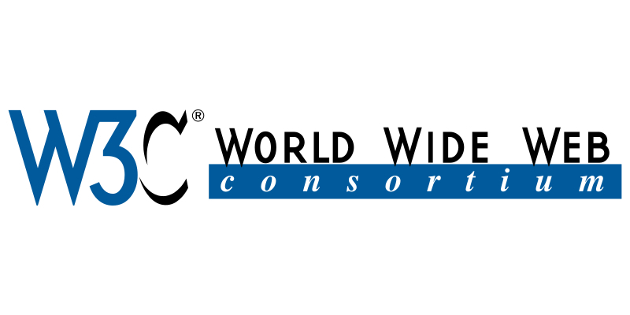

> Inicializando o protocolo HTTP...
> Carregando linguagem HTML base...
> Status: Conexão Global Estabelecida.
| Tecnologia | Significado | Importância para a Informática |
|---|---|---|
| HTML | HyperText Markup Language | Estrutura os documentos e conteúdos das páginas. |
| HTTP | HyperText Transfer Protocol | Gerencia a comunicação entre o navegador e o servidor. |
| URL | Uniform Resource Locator | Define o endereço único de cada recurso na rede. |
| W3C | World Wide Web Consortium | Padroniza as tecnologias web no mundo inteiro. |
Tim não parou no tempo. Atualmente, ele lidera o Projeto Solid e a W3C, lutando para que os usuários voltem a ter controle total sobre seus próprios dados, criando uma internet mais descentralizada e segura.
